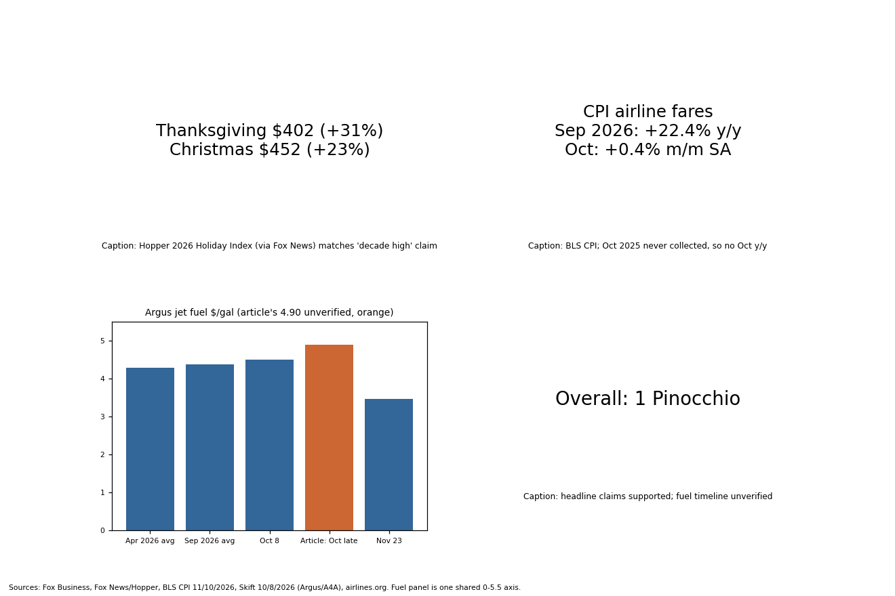

Holiday airfare piece: core claim holds, fuel numbers do not reconcile (1 Pinocchio)
Fox Business (Nov 20, 2026) says holiday airfares are the highest in a decade because of jet fuel. Hopper's index supports that: Thanksgiving domestic round trip $402 (+31%), Christmas $452 (+23%). The article's jet fuel figures ($4.88 April peak, below $3 in summer, $4.90 late October) could not be confirmed. Argus/A4A data shows April average $4.29, September record $4.37, $4.50 on Oct 8, and $3.47 on Nov 23. Gaps: the page was read through a summarizer, not verbatim; the late-October and summer fuel values were not retrievable.
- Decade-high fares: supported (Hopper via Fox News). Confidence medium-high.
- Fuel about double a year ago: not checked; no 2025 series retrieved.
- Fuel timeline: April peak and $4.90 conflict with Skift/Argus (September, not April, was the record month average). Low confidence.
- Book-early claim: not in Hopper coverage found; not verified.
- Fuel is 15-30% of airline cost: consistent with industry norms; no primary source retrieved.
- BLS context: CPI airfares +22.4% y/y Sep 2026; Oct y/y not published (Oct 2025 not collected).
- Misleading risk: fuel has fallen to $3.47 by Nov 23, so "fuel surge" is dated.
Sources
- https://www.foxbusiness.com/economy/holiday-airfares-hit-highest-levels-decade-jet-fuel-prices-surge
- https://www.foxnews.com/travel/holiday-airfare-hits-10-year-high-thanksgiving-christmas-travel-costs-soar.amp
- https://www.bls.gov/news.release/archives/cpi_11102026.htm
- https://skift.com/2026/10/08/higher-airfares-are-here-to-stay-but-dont-expect-airline-profits-to-increase/
- https://www.airlines.org/dataset/argus-us-jet-fuel-index/